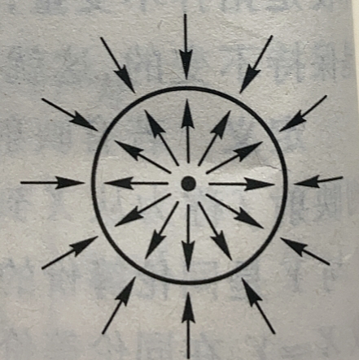
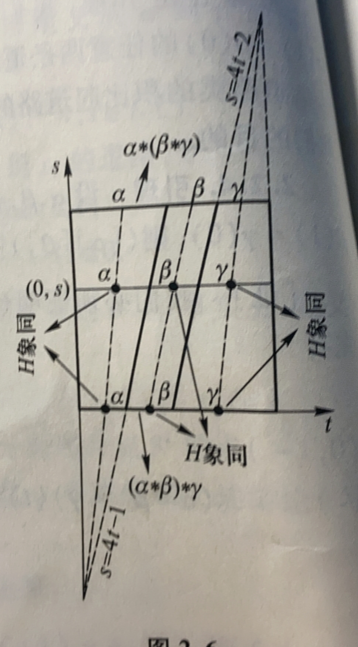

抽到的 SSR 暑课
# 拓扑空间
# 拓扑空间
# 度量空间
我们用ρ(x,y) 表示点x 到y 的距离，当谈到点列{xn}n∈N 以a 为极限时，都意味着limn→∞ρ(xn,a)=0。这里定义的距离的本质上由下列四条基本性质确定：
- ρ(x,y)≥0
- ρ(x,y)=0⇔x=y
- ρ(x,y)=ρ(y,x)
- ρ(x,z)≤ρ(x,y)+ρ(y,z)
我们把这四条性质称为度量公理，其中第四条称为三角不等式。
定义
设X 为一非空几何，ρ:X×X→R 为一函数，使得对X 的任意点总满足度量公理，则ρ 称为X 上的一个度量，偶(X,ρ) 称为以ρ 为度量的度量空间。若x,y∈X，则ρ(x,y) 称为x,y 间的距离。
例：实数空间的通常度量E1=(R,ρ)：
ρ(x,y)=∣x−y∣x,y∈R
# 度量空间的开集
定义
设(X,ρ) 为度量空间，x∈X,ε 为一正数，则称X 的子集
B(x,ε)={y∈X∣ρ(y,x)<ε}
为以x 为中心，ε 为半径的球形邻域，简称x 的ε− 邻域。
命题
设B 为度量空间(X,ρ) 的所有球形邻域组成的族，则
- X=⋃B∈BB.
- 若B1,B2∈B,x∈B1∩B2，则存在x 的一个球形邻域Bx，使得x∈Bx⊂B1∩B2.
- 若B∈B,x∈B，则存在x 的球形邻域Bx 使得x∈Bx⊂B.
证明，第一条因为所有的点x 都属于它自己的球形邻域。第二个画画图能画出来可以取ε=min{ε1−ρ(x,x1),ε2−ρ(x,x2)}。第三条也很简单。
定义
度量空间(X,ρ) 的子集A，如果它是若干（有限或无限）个球形邻域的并，即存在子族B0⊂B，使得A=⋃B∈B0B，则A 称为开集。
根据定义，每个球形邻域自己也是开集。
定理
设F 为度量空间(X,ρ) 的全体开集组成的族，则F 满足下列开集公理：
- X∈F.
- ∅∈F.
- O1,O2∈F⇒O1∩O2∈F.
- 对任意子族F0⊂F, ⋃O∈F0O∈F.
# 拓扑空间
定义
设X 是集合，F 是X 的一个子集族，其成员满足开集公理，则称F 为集合X 上的一个拓扑，F 称为X 的开集。集合X 与它的一个拓扑F 组成的偶(X,F) 称为拓扑空间，简称空间。X 的点、子集、开集与拓扑仍分别称为空间(X,F) 的点、子集、开集与拓扑。
例
任何度量空间都是拓扑空间，F 就是全体开集组成的族，被称为度量拓扑。因此n 维欧氏空间En 以及 Hilbert 空间Eω 都是拓扑空间。
例
设X=∅，令F={X,∅}，F′=2X 为X 的幂集，则不难验证(X,F) 和(X,F′) 分别称为集合X 上的平凡拓扑与离散拓扑。
例
设X={a,b,c}，令
F={∅,{a},{a,b},{a,c},{a,b,c}}
不难验证F 是X 的一个拓扑，因此(X,F) 是拓扑空间。
# 拓扑基
我们已经看到，度量空间的球形邻域族B 是它的度量拓扑F 的子族，而且每一开集可以由B 的成员通过并的运算得到。这与向量空间中的向量可以由它的基组成类似。因此我们把B 称为F 的基。
定义
设集合X 的一个子集族B={Bα}α∈Γ 满足下列两条性质：
- X=⋃α∈Γ.
- 若α,β∈Γ,x∈Bα∩Bβ, 则存在γ∈Γ 使得x∈Bγ⊂Bα∩Bβ.
则称B 为X 的一个拓扑基。
命题
设B 是集合X 的拓扑基，则X 的子集A 是关于B 的开集，当且仅当对每一点a∈A 存在Ba∈B，使得a∈Ba⊂A。
定理
设B 是集合X 的拓扑基，则关于B 的开集的全体F 是X 的一个拓扑，而且B⊂F。特别，如果B 本身是个拓扑，则B=F。
命题
设(X,F) 是拓扑空间，如果X 的一个子集族B⊂F，使得每个U∈F 都是B 中成员的并，则B 是(X,F) 的拓扑基。特别，F 是(X,F) 的拓扑基。
例
设欧式空间En 的子集族：B1={B(x,ε)∣x 的坐标是有理数，ε 是正有理数}。则B1 是En 的一个拓扑基。
# 关于子集的基本概念
# 闭集
定义
如果X−F 是X 的开集，则F 称为X 的闭集。
定理
设C 为空间X 的全体闭集，则它满足闭集公理：
- ∅∈C.
- X∈C.
- C1,C2∈C⇒C1∪C2∈C.
- 对任意子族C0⊂C,⋂C∈C0C∈C.
换言之，对集合X 上给定的子集族C，如果它满足闭集公理，则
F={X−C∣C∈C}
就成为X 上的一个拓扑。
# 邻域、内部与闭包
定义
点x∈A 称为A 在X 中的一个内点，如果存在开集U 使得x∈U⊂A. 这时我们还说A 是x 在X 中的一个邻域。若A 本身是开集，就说A 是x 在X 中的开邻域。 类似地，A 称为B 在X 中的一个邻域，如果存在开集U 使得B⊂U⊂A。A 在X 中的内点的全体称为A 在X 的内部，记作A˚。当A 是两个以上子集运算的结果时，我们记做(A)∘。
点x 与子集A 的位置关系除了上述的内点之外，还有集中重要的位置关系值得注意。
如果点x 在X 中的每个邻域U 包含A−{x} 的点，即U∩(A−{x})=∅，则称x 为A 在X 中的一个聚点，当然内点也可能是聚点。A 在X 中的全体聚点称为A 的导集，记为Aˊ。我们还把A−Aˊ 的点称为A 在X 中的孤立点。子集A∪Aˊ 称为A 在X 中的闭包，记作Aˉ。
于是，x∈Aˉ 当且仅当对x 的每个邻域U 都有U∩A=∅。
此外，如果点x 在X 中的每个邻域既含A 的点，又含X−A 的点，则称x 为A 在X 中的一个边界点。A 在X 中的全体边界点称为A 在X 中的边界，记为A˙。
定义
X 的点列{xn}n∈N 称为收敛到点a∈X，如果对a 在X 中的任意邻域U，存在正整数m，使得n>m 时，有xn∈U。这时也说a 是点列{xn}n∈N 的极限（点），记作limn→∞xn=a。如果(X,ρ) 是度量空间，则不难看出limn→∞xn=a 当且仅当limn→∞ρ(xn,a)=0。
命题
X−A˚=X−A,(X−A)∘=X−Aˉ
会发现第二个式子就是第一个式子的直接推论。
根据定义: x∈X−A⇔ 对x 的每个邻域U，U∩(X−A)=∅⇔x∈/A˚⇔x∈X−A˚。
命题
A˚ 是包含在A 中所有开集的并，Aˉ 是包含A 的所有闭集的交。
命题
对X 的任意子集A,B 有
- A˚⊂A⊂Aˉ.
- 若A⊂B，则A˚⊂B˚，且Aˉ⊂Bˉ.
- A 是X 中的开集⇔A˚=A
- A 是X 中的闭集⇔Aˉ=A.
- ((˚A))∘=A˚,Aˉˉ=Aˉ.
- (A∩B)∘=A˚∩B˚,A∪B=Aˉ∪Bˉ.
# 连续映射与同胚
# 连续映射及其基本特征
定义
设f:X→Y 为空间X 到空间Y 的一个函数，x0∈X，如果对f(x0)∈Y 的任意邻域V，总存在x0 的一个邻域U 使得f(U)⊂V，则称f 在点x0 处连续。
若f 在X 的每一点连续，则称f 为X 到Y 的连续映射，简称映射，当Y=E1，则称映射f:X→E1 为连续的（实值）函数。
定理
设f:X→Y 是空间X 到空间Y 的函数，那么以下论断等价：
- f 是映射.
- 对Y 的任意开集V，f−1(V) 是X 中的开集.
- 对Y 的任意闭集F，f−1(F) 是X 中的闭集.
- 对任意A⊂X，f(Aˉ)⊂f(A).
- 对任意B⊂Y，f−1(B)⊂f−1(Bˉ).
- 对Y 的任意拓扑基的每个成员B，f−1(B) 是X 的开集.
- 对任意B⊂Y，f−1(B˚)⊂(f−1(B))∘.
定理
设f:X→Y 是空间X 到空间Y 的给定函数，若f 在点x∈X 处连续，则对X 的每个收敛到x 的点列{xn}n∈N，有
n→∞limxn=x⇒n→∞limf(xn)=f(x)
反之，若对于每个收敛到x 的点列{xn}n∈N 都有limn→∞xn=x，那么f 在点x 处连续。
# 映射举例
例
常值映射e:X→Y，e(X) 是Y 的独点子集，则e 为映射。
例
内射i:A→X，其中A 是空间X 的子空间，i 定义为
i(a)=a,a∈A
则i 为映射。特别地，当A=X 则为恒等映射1:X→X。
例
若f:X→Y 和g:Y→Z 均为映射，那么g∘f:X→Z 也是映射。
例
设f:X→Y 是映射，A 是X 的子空间，由
(f∣A)(a)=f(a),a∈A
定义的f∣A:A→Y 也是映射，称为映射f 在A 上的限制，同时称f 为f∣A 在X 上的扩张。
例
设f:X→Y 是映射，B 是Y 的子空间，使得f(X)⊂B，则由f 确定的函数fB:X→B:
fB(x)=f(x),x∈X
也是映射，称为f 在B 中的诱导映射。特别，当B=f(X) 时，fB:X→f(X) 也是映射。
粘接引理
设F1,F2,...,Fn 为X 的闭子空间，使得X=⋃i=1nFi。fi:Fi→Y 为给定映射，i=1,2,...,n 且满足相容条件：
fi∣Fi∩Fj=fj∣Fi∩Fj,1≤i,j≤n
则由
f(x)=fi(x),x∈Fi
定义的函数f:X→Y 是映射。我们通常把上述定义写为
f∣Fi=fi,i=1,2,...,n
# 同胚
例
设S1 是欧式平面（看作复平面）内的单位圆周，X=[0,1)∈E1。定义指数函数p:X→S1 为
p(x)=e2πix,x∈X
不能验证p 是既单又满的映射。那么我们可以把线段[0,1) 和圆周看作同样的图形吗？显然不可以，造成这两个图形差别大（一个是左闭的，一个是两头开的）的原因是p−1:S1→X 在点(1,0) 处不连续。
定义
设f:X→Y 是既单又满的映射，且其逆f−1:Y→X 也是映射，则f 称为X 到Y 的同胚，记作f:X≈Y。如果存在这样的同胚，那么我们也说X 与Y 拓扑等价或同胚等价，记作X≈Y。
例
(0,1)≈E1。我们可以定义连续函数f:(0,1)→E1 为f(t)=tan((t−21)π),t∈(0,1)。则f 是同胚映射。
例
同胚(0,1)≈S1−{(1,0)}，其中S1 是欧式平面空间上的单位圆。
定理
拓扑等价（同胚）是一个等价关系：
- X≈X
- X≈Y⇔Y≈X
- X≈Y,Y≈Z⇒X≈Z
命题
开集、闭集、闭包、内部与点列的收敛性都是拓扑不变的。
确切地说，如果f:X≈Y，则U 是X 的开集，当且仅当f(U) 是Y 的开集。
如果f:X→Y 是映射，而且f 把X 中每个开（闭）集映成Y 中的开（闭）集，则称f 为开（闭）映射。
命题
设f:X→Y 是空间X 到空间Y 的函数，则下列彼此等价：
- f 是同胚
- f 是既单又满的开映射
- f 是既单又满的闭映射
最后，与同胚稍有差别的概念嵌入：
定义
如果f:X→Y 是映射，B=f(X)，使得f 在B 中的诱导映射是同胚：
fB:X≈f(X)
则称f 为嵌入。并且当f 是嵌入时，我们常常把X 与f 的象f(X) 等同起来，从而把X 看成Y 的子空间。
命题
设f:X→Y,g:Y→X 均为映射，使得合成
g∘f=1X:X→X
则f 为嵌入。
# 紧致性
# 紧致空间
定义
设D={Dα}α∈Γ 是空间X 的一族子集，A 是X 的子集，使得A⊂⋃α∈ΓDα，则称D 为A 在X 中的一个覆盖。
如果覆盖D 中的每个成员都是开集，则我们称之为A 在X 中的一个开覆盖。若Γ 为有限（可数）集合，那么称D 为A 在X 中的一个有限（可数）覆盖。
若Λ⊂Γ 使得D0={Dα}α∈Λ，则称D0 为D 的一个子覆盖，如果A=X，则D 称为X 的覆盖，省略 “在X 中” 的描述。
例
拓扑空间(X,F) 中所有开集的族F 就是一个开覆盖。同样地，F 的拓扑基，所有球形邻域的集合B 也是一个开覆盖。
定义
如果空间X 的任何开覆盖，都有一个有限子覆盖，确切地说，对X 的任何开覆盖V={Vα}α∈Γ，存在子族V0={Vα1,...,Vαn}⊂V，使得V0 仍是X 的覆盖，则称X 为紧致拓扑空间。
定义
设A 为空间X 的子集，如果A 作为子空间是紧致的，则称A 为X 的紧致子集（紧致子空间）。
命题
设A 是空间X 的子集，则A 是X 的紧致子集当且仅当A 在X 中的任何开覆盖都有有限子覆盖。
Heine-Borel-Lebesgue 定理
E1 的任意闭区间[a,b] 是紧致子集。
例
E1 本身并不是紧致的，事实上
U={(−n,n)∣n=1,2,...}
形成了E1 的一个开覆盖，但是U 的任意有限子族{(−n1,n1),(−n2,n2),...,(−nk,nk)} 的并并不是E1 的覆盖，即U 没有有限子覆盖。
# 紧致空间的性质
命题
紧致空间的连续映射象仍是紧致的。特别，紧致性是拓扑（同胚）不变的。
证明：设C 是紧致空间X 的闭子集，U 是C 在X 中的开覆盖，那么U∪{X−C} 就成了X 的一个开覆盖。
因为X 是紧致的，故U∪{X−C} 存在一个有限子覆盖。
然后可考虑这个有限子覆盖，去掉X−C 后就得到了U 的一个有限子覆盖。
Bolzano-Weierstrass 性质
紧致空间的无穷子集必有聚点。
证明：设X 为紧致空间，我们证明没有聚点的任意子集A 必为有限集。因Aˊ=∅，A 是X 的闭集，由上个命题有A 是紧致的。
对每一个点a∈A，存在a 的一个开邻域Ua，使得Ua∩A={a}（因为a 不是A 的聚点）
于是就会有开覆盖{Ua}a∈A。
又因为A 是紧致的，故根据定义，其任意一个开覆盖都会有一个有限子覆盖{Ua}a∈A′。
而每个Ua 中只包含A 中的一个点，因为子覆盖是有限的，即A 也是有限的。
# Hausdorff 空间中的紧致性
定义
若空间的任意两个不同点有不相交的邻域，则称之为 Hausdorff 空间，也说它满足T2 公理。
事实上，任意度量空间都是 Hausdorff 空间。
命题
设集合A 是 Hasudorff 空间X 的紧致子集，x∈X−A，则x 与A 有互不相交的邻域。从而 Hausdorff 空间的紧致子集总之闭集。
更一般地，Hausdorff 空间中任意两个不相交的紧致子集有不相交的邻域。
命题
紧致 Hausdorff 空间中的子集是紧致的，当且仅当它是闭的。
定义
若空间X 的任意两个不相交的闭集有不相交的邻域，则称X 是正规空间。
命题
空间X 是正规的，当且仅当X 中的每个闭集F 的任意邻域包含F 的一个邻域的闭包。
定理
从紧致空间X 到 Hausdorff 空间Y 既单又满的映射是同胚。
# 度量空间的紧致性
定义
设A 是度量空间(X,ρ) 的子集，如果存在正数m，对任意x,y∈A，使得ρ(x,y)≤m 成立，则称A 是有界的，否则称A 是无界的。
空集是约定有界的，对于有界子集A，我们定义A 的直径是非负实数
d(A)={0supx,y∈A∣ρ(x,y)∣A=∅A=∅
命题
度量空间(X,ρ) 的紧致子集A 总是有界闭集。
推论
紧致空间X 到E1 的任何连续函数均有界，而且能在X 的点达到最大值与最小值。
Lebesgue 引理
设V={Vα}α∈Γ 是紧致度量空间(X,ρ) 的开覆盖，则存在正数λ（称为开覆盖V 的 Lebesgue 数），使得X 中的直径小于λ 的任何子集A 必包含于V 的某个成员Vα 中。
定理
从紧致度量空间(X,ρ) 到度量空间(X′,ρ′) 的连续映射f 总是一致连续的，即对于任意正数ε，存在正数δ 使得ρ(x,y)<δ⇒ρ′(f(x),f(y))<ε。
# 连通性
# 连通空间
定义
设A 与B 是空间X 的非空子集，且(Aˉ∩B)∪(A∩Bˉ)=∅，则称A 与B 为X 的一对分离子集。如果X 不是一对分离子集的并，则称X 为连通的，否则称X 为非连通的。
例
E1 中的区间(0,1),(1,2) 就是一对分离区间。因为(0,1)=[0,1]，注意这里是在求闭包加入聚点而不是求补。而(0,1),[1,2) 就不是分离子集。
例
实直线E1=(−∞,∞) 是连通空间。
定理
设X 是空间，则下列陈述彼此等价
- X 是连通的
- X 不是两个不相交非空开集的并
- X 不是两个不相交非空闭集的并
- X 中只有X 与∅ 既开又闭
- 对任意连续函数f:X\rightarrow E^1,f(X)\neq\
# 子集的连通性
定义
空间X 的子集A 称为X 的连通子集，如果A 作为X 的子集是连通的。
命题
连通空间的连续映射象是连通集。
连通性是同胚不变的，即若X≈Y，则X 连通当且仅当Y 连通。
设Y 为空间X 的子空间，Z⊂Y，则Z 是Y 的连通子集当且仅当Z 是X 的连通子集。
引理：
设Y 为X 的非空连通子集，A 与B 是X 中的一对分离子集，使得Y⊂A∪B。则Y⊂A 或Y⊂B。
命题
在空间X 中，设Y 是连通子集，且Y⊂Y1⊂Yˉ，则Y1 也是连通的。特别地，若Y 连通，则Yˉ 也是连通的。
例
实数轴上任意一个区间都是连通的。事实上。任意一个开区间还与E1 同胚。
命题
设Y 是空间X 的连通子集{Yα}α∈Γ 是X 的一族连通子集，使得Yα∩Y=∅，对一切α∈Γ 成立。则Y∪(⋃α∈ΓYα) 仍是连通的。
定义
若A 是空间X 的连通子集，而且又不是别的连通集的真子集，则称A 为X 的极大连通子集或连通分支。
命题
X 的连通分支总是闭集。不同的连通分支彼此分离。
# 道路连通性
定义
设f:I→X 是映射，f(i)=xi,i=0,1。则称f 为X 中连接x0 和x1 的道路。x0,x1 分别称为道路的起点和终点。
如果X 中任意两点都有X 中道路连接，则称X 为道路连通的。
而映射fˉ(t)=f(1−t) 则被称为f 的逆道路。
例
欧式空间中的子集X 称为凸集如果对任意x,y∈X 由点x 与y 确定的闭线段
[x,y]={(1−t)x+ty∣t∈I}
整个包含于X。
现在，我们证明凸集X 是道路连通的。定义f(t)=(1−t)x+ty 易见f(I)⊂X，并且f 是连续的，从而f 是道路。
命题
设σ,τ 是X 中的道路，使得
σ(1)=y=τ(0)
则由下式
(σ∗τ)(t)={σ(2t)τ(2t−1)0≤t≤2121≤t≤1
定义的σ∗τ:I→X 是从σ(0)=x 到σ(1)=z 的道路。称为σ 和τ 的积。
命题
道路连接空间的连续映射象仍是道路连通的。特别地，道路连通性是拓扑不变的。
定义
若A 是空间X 的道路连通子集，又不是别的道路连通子集的真子集，则称A 为X 的极大道路连通子集或道路连通分支。
命题
空间的每个非空道路连通子集恰包含于一个道路的连通分支中。每个空间都是互不相交的道路连通分支的并。
例
考虑这样一个点集X=Y∪Z:
Y={(0,t)∈E2∣−1≤t≤1}Z={(x,sinxπ)∈E2∣0<x≤1}
它是连通的，但不是道路连通的。
E1 与E2 是不同胚的。
# 乘积空间
# 乘积空间与乘积拓扑
命题
En 的子集族
B={U1×U2×U3×...×Un}
其中Ui 是E1 的开集。那么该子集族是En 的一个拓扑基。
这个想以下，本质上就是n 维欧氏空间的坐标是n 个一维空间的直积。
定义
对给定的n 个拓扑空间(Xi,Fi)，选取点集的直积X=X1×...×Xn 的子集族：
B={U1×...×Un∣Ui∈Fi}
是集合X 的一个拓扑基，被称为乘积拓扑。Xi 被称为拓扑积X 的第 i 个坐标（因子）空间。
例
圆周S1 与单位区间I 的拓扑积是以S1 为准线，I 为母线的圆柱侧面，如下图：
然后可以考虑V 是I 上的一个开集，U 是S1 上的一个开集，那么U×V 就是拓扑积S1×I 上的一个开集。
例
S1×{0} 和S1×{1} 分别是上个例子中圆柱的上底面和下底面。
例
环面是两个圆周S1 的拓扑积：
整个环面上的点都可以用两个实数坐标确定。实际上，作为欧氏空间E3 的子空间，它与E1×E1 是同胚的。
# 积空间的连续性
首先，我们描述坐标空间与积空间之间的映射，令
p1:X×Y→X,p2:X×Y→Y
分别表示拓扑积X×Y 到第一个坐标空间X 和第二个坐标空间Y 的投影。设x0,y0 分别是X,Y 中的给定点，还可以定义
i1(x)=(x,y0),i2(y)=(x0,y)
命题
投影p1 和p2 为满的开映射。
i1,i2 均为映射，且分别把X 和Y 嵌入X×Y 为子空间X×{y0} 与{x0}×Y。
例如实数轴E1 可以嵌入欧式平面E2 成为平行于坐标轴的直线。
下面这个命题讨论了任意空间Z 到拓扑积空间X×Y 的函数f:Z→X×Y 在什么情况下连续的问题，它使得我们把问题简化为验证每个坐标函数是否连续。
命题
函数f:Z→X×Y 连续，当且仅当坐标函数
p1∘f:Z→X,p2∘f:Z→Y
均连续。
然而，如果有函数是从积空间到另一个空间f:X×Y→Z，而f∘i1 和f∘i2 在x0,y0 处均连续，并不能推出f 在(x0,y0) 处连续。反例：
f(x,y)={x2+y2xy0(x,y)=0(x,y)=0
在(0,0) 处有(f∘i1)=f(x,0),(f∘i2)=f(0,y) 都是单独分别连续的，但是f 在(0,0) 处并不连续。因为可以沿着y=kx 这条线逼近原点，此时f(x,kx)≡1+k2k 不为 0。
命题
设fi:Xi→Yi 为映射，则可以定义
(f1×f2)(x1,x2)=(f1(x1),f2(x2))
则f1×f2:X1×X2→Y1×Y2 也是映射，称为f1 与f2 的拓扑积。由此可得
X1≈Y1,X2≈Y2⇒X1×X2≈Y1×Y2
# 有限可积性质
定义
如果有限个拓扑空间X1,...,Xn 具有性质P，能够推出积空间X1×...×Xn 也有性质P，那么称P 为有限可积性质。
命题
X×Y 是 Hausdorff 空间，当且仅当X,Y 均为 Hausdorff 空间。
X×Y 是连通空间，当且仅当X,Y 均为连通空间。
X×Y 是道路连通空间，当且仅当X,Y 均为道路连通空间。
X×Y 是紧致的，当且仅当X,Y 均为紧致的。
命题
设a∈X,B 是Y 的紧致子集，W 是{a}×B 在X×Y 中的邻域。则存在X 与Y 的开集U,V 使得{a}×B⊂U×V⊂W。
最后，我们指出En 内有界闭集与紧致性的等价性：
En 的子集是紧致的，当且仅当它是有界闭集。
# 粘合空间
# 粘合拓扑
在这里可以先考虑一个例子，这个例子很好地说明了同胚空间的用处。考虑下图所示平面双摆

我们可以用(φ,ψ) 唯一地确定摆锤的一个位置，而且特别地，(φ+2nπ,ψ+2mπ) 和(φ,ψ) 对应同一个位置。因此我们考虑用一个边长为2π 的正方形，同时粘合两组对边组成的一个环面来描述摆锤的位置。

而同胚的概念，就可以形象地理解为，相近的摆锤的位置对应的点，在环面上也是相近的。
定义
设(X,F) 为拓扑空间，∼ 是集合X 中的一个等价关系，p:X→X/∼ 为X 到商集X/∼ 的自然投射，那么定义商集X/∼ 的子集族：
H∼={W⊂X/∼∣p−1(W)∈F}
则H∼ 是商集X/∼ 上的拓扑，称为F 关于等价关系∼ 的粘合拓扑（商拓扑），(X/∼,H∼) 称为(X,F) 关于等价关系∼ 的粘合空间（商空间）。
自然映射p:X→X/∼ 是满映射，称为粘合映射。
更一般地，如果p:X→Y 是满映射，使得Y 的子集W 是开集当且仅当p−1(W) 是X 的开集，则我们把这样的p 称为粘合映射，Y 的拓扑称为p 在Y 上诱导的粘合拓扑。
命题
设p:X→Y 为粘合映射，f:X→Z 为映射，使得对任意y∈Y，f[p−1(y)] 是Z 的独点集，即f∘p−1 为函数，则函数f∘p−1:Y→Z 是连续映射，且g∘p=f，这可以标识为以下交换图：

命题
设f:X→Y 为粘合映射，K 为紧致的 Hausdorff 空间，则f 与恒等映射1K 的拓扑积f×1K:X×K→Y×K 为粘合映射。
# 例子
例
设A 为空间X 的子集，定义X 上的等价关系为，A 中的点相互等价，X−A 中的点互不等价，即只跟自己等价。如此得到的空间X/∼ 记作X/A，形象化地理解为 “把A 中的点捏成一个点”。
譬如I/{0,1} 可以看作把单位区间两端捏在一起而成，并且I/{0,1}≈S1。一般地，有
In/I˙n≈Bn/Sn−1≈Sn
例（莫比乌斯带）
从E2 内的长方形X=[0,8]×[0,1] 开始，定义X 中的等价关系为：(0,y)∼(8,1−y),y∈I，此外每个点与自己等价。所得的粘合空间就为莫比乌斯带。
例（克莱因瓶）
从E2 内的正方形X=I2 开始，定义X 中的等价关系为(0,y)∼(1,y),y∈I;(x,0)∼(1−x,1),x∈I，此外每个点都与自己等价。所得空间为克莱因瓶。相比于环面，在把正方形卷成圆柱后，克莱因瓶是把上下底面方向相反地粘在一起，导致必然会有曲面相交。
# 基本群
# 映射的同伦与空间的同伦型
# 映射的同伦
定义
设f0,f1:X→Y 是两个映射，如果存在连续映射H:X×I→Y 使得
H(x,t)=ft(x),x∈X,t=0,1
就说f0 同伦于f1，记作f0≃Hf1:X→Y，或简记为f0≃Hf1，甚至记为f0≃f1。其中H 称为f0 到f1 的一个同伦或伦移。
理解同伦关系可以把t 理解为时间，把映射理解为空间路径。即可以在一定时间内，从形状 1，连续地变化为形状 2。
例
设C 为欧氏空间内的一个凸集，f,g 是任意空间到C 的映射，定义H:X×I→C 为
H(x,t)=(1−t)f(x)+tg(x)
则H 是f 到g 的一个同伦。特别地，若g 是常值映射，则f 同伦于常值映射，被称为是零伦的，写作f≃0。
定理
同伦关系≃ 是YX 上的等价关系。
证明：自反性，可以构造H(x,t)≡f(x)，则f≃Hf。
对称性，可构造同伦的逆Hˉ(x,t)=H(x,1−t)，即时间倒流的形变。
传递性，可以先进行形变 1，再进行形变 2，即：
H(x,t)={H1(x,2t)H2(x,2t−1)0≤t≤2121≤t≤1
考虑粘接引理，它是一个连续映射。故证毕。
引理
若f0≃f1:X→Y,g0≃g1:Y→Z 则g0∘f0≃g1∘f1:X→Z。
# 空间的同伦型
定义
若有映射f:X→Y 与g:Y→X 使得g∘f=1X,f∘y=1Y，则称映射f 为从X 到Y 的同伦等价，g 称为f 的同伦逆，并且也说X 和Y 是同伦等价的，或说X 与Y 有相同的同伦型，记作f:X≃Y。
在同伦等价映射下保持不变的性质被称为同伦不变性质，
定理
同伦关系≃ 是拓扑空间上的等价关系。
例
欧式空间的凸集与独点空间有相同的同伦型。事实上，若X 是凸集，a∈X，令i:{a}↪X 是内射，r:X→{a} 是常值映射，则有r∘i=1{a}。
又由于任意空间到欧氏空间凸集的映射都是同伦的（见前例），故有r∘i≃1X。
例
对n≥1，En−{O}≃Sn−1。可以定义
i:Sn−1→En−{O},i(x)=xr:En−{O}→Sn−1,r(x)=∣∣x∣∣x
于是有r∘i=1Sn−1。那么考虑证明i∘r≃1En−{O}：
H:(En−{O})×I→En−{O}H(x,t)=tx+(1−t)∣∣x∣∣x
在二维情况下，可以理解为运动趋势：

这里也可以理解为什么要挖去原点。因为尽管可以构造H(0,t) 向某个方向移动，但一定会导致在x=0 处不是连续的。
定义
设A 是X 的子空间，i:A↪X 表示内射，如果存在映射r:X→A，使得r∘i=1A，则r 称为X 到A 的保核收缩（映射），A 称为X 的收缩核。
如果除此之外还有同伦1X≃Hi∘r，则H 称为X 到A 的一个形变收缩，A 称为X 的形变收缩核。
假如同伦还满足条件∀a∈A,t∈I,H(a,t)=a，则称H 为X 到A 的一个强形变收缩，A 称为X 的强形变收缩核。
# 零伦与可缩空间
命题
考虑一种锥形。对任意空间X，粘合空间X×I/X×{1} 被称为X 上的锥形，记作CX。对应x→[x,0] 把X 嵌成锥形CX 的闭子空间，称为CX 的底，X×{1} 的粘合象称为CX 的顶点。
这样的锥形都是可缩的。
同时，f≃0 当且仅当f 可以扩张到锥形上。
命题
以下短语等价
- X 可缩
- 1X≃0
- 对任意空间Y 和映射f:X→Y,f≃0
- 对任意空间Z 和映射g:Z→X,g≃0
- X 是锥形CX 的收缩核
# 相对同伦
设A 是空间X 的子集，则有序偶(X,A) 称为空间偶。又若f:X→Y 把子集A 映射到Y 的子集B，则我们把它记为
f:(X,A)→(Y,B)
称为空间偶到空间偶的映射。若f:(X,A)→(Y,B),g:(Y,B)→(X,A) 均为映射，使得g∘f=1X,f∘g=1Y，则称f 为空间偶的同胚，记作
f:(X,A)≈(Y,B)
若F:X×I→Y 是同伦，使得F(A×I)⊂B，则记作F:(X×I,A×I)→(Y,B) 或F:(X,A)×I→(Y,B)，称为空间偶(X,A) 到(Y,B) 间的同伦。
又若
F(X,0)=f0(x),F(x,1)=f1(x)
则称F 是偶的映射f0 到f1 的同伦，记作
f0≃Ff1:(X,A)→(Y,B)
更进一步，如果
∀a∈A,t∈I,F(a,t)=f0(a)=f1(a)
则称为相对于A，f0 同伦于f1 记作f0≃Ff1:X→YrelA。
# 基本群的定义
# 道路类的积
首先，显然地，道路的积并不满足结合律，因为它并不是三等分，而是 1/4，1/4，1/2 这样合成的三条路。
为了解决这个问题，用relI˙ 的同伦类来代替道路：
定义
设f0,f1:I→X 是两条道路，使得f0∣i=f1∣i 即f0(0)=f1(0),f0(1)=f1(1)。如果f0≃f1:I→XrelI˙，则称f0 与f1 是等价的道路。记作f0≃.f1，仍用[f0] 表示f0 所在的等价类，称为f0 的道路类。
根据定义，f0≃.f1 意味着有一个映射F:I×I→X 使得
F(t,0)=f0(t),F(t,1)=f1(t)F(0,s)=f0(0),F(1,s)=f0(1)
直观意义如图
可以看作F 把一个单位正方形，连续地映射到了一个纺锤形。
例
设X 是En 中的凸集，x0,x1∈X,α,β 是X 中从x0 到x1 的两条道路，则α≃.β。定义的H:I×I→X 为
H(t,s)=(1−s)α(t)+sβ(t)
引理
若f0≃.f1,g0≃.g1,f0(1)=g0(0)，则f0∗g0≃.f1∗g1。
证明如图
引理
设α,β,γ 是X 中的三条路，满足α(1)=β(0),β(1)=γ(0)，则有([α][β])[γ]=[α]([β][γ])。
证明：首先，按定义有
((α∗β)∗γ)(t)=⎩⎪⎪⎨⎪⎪⎧α(4t),β(4t−1),γ(2t−1),0≤t≤4141≤t≤2121≤t≤1(α∗(β∗γ))(t)=⎩⎪⎪⎨⎪⎪⎧α(2t),β(4t−2),γ(4t−3),0≤t≤2121≤t≤4343≤t≤1
然后怎么构造同伦H:I×I→X 呢？可以分析图

理解一下这个图，正方形的上边，即s=1 时，有H(t,1)=(α∗(β∗γ))(t)。即上边对应了(α∗(β∗γ)) 这条道路，也可以看到α,β,γ 分别占t 方向横坐标的边长为1/2,1/4,1/4。
然后正方形的下边，即s=0，则很显然是()(α∗β)∗γ) 这条路。
那么我们得想办法构造一个连续的变化过程，从 “走 1/2 的α，走 1/4 的β，走 1/4 的γ” 变化到 “走 1/4 的α，走 1/4 的β，走 1/2 的γ”
而随着s 的变化，就是道路的变化。对于任给一个s，我们需要观察α,β,γ 分别应该走多少比例。
可以构造出：
H(t,s)=⎩⎪⎪⎨⎪⎪⎧α(1+s4t),β(4t−s−1),γ(2−s4t−s−2),0≤t≤41+s41+s≤t≤42+s42+s≤t≤1
即前41+s 把α 走完，再在41 内把β 走完，再在42−s 内把γ 走完。
# 基本群的构成
引理
[eα(0)][α]=[α]=[α][eα(1)]
其中，ex 表示f(t)≡x 的常值映射，即单点道路。
[α][αˉ]=[eα(0)],[αˉ][α]=[eα(1)]
其中，αˉ 表示α 的逆道路。
在空间X 中，选取一个基点x，所有X 中起点和终点均为x 的闭路的集合记作Ω(X,x)。其中的道路彼此都可以作道路积。
集合Ω(X,x) 按前述等价关系分成等价类，即闭路的等价类，称为闭路类，所有这种闭路类的集合记作π1(X,x)。
定理
在道路类的积这种运算下，集合π1(X,x0) 是一个群，称为空间X 以基点x0 为基点的基本群。
# 基点的改变
设x0,x1 是空间X 中的两个点，分别取它们作为基点，则得到了两个群π1(X,x0),π2(X,x1)，它们是彼此同构的！
考虑用X 中的一条道路ω:I→X 连接x0,x1 两点，使得ω(0)=x0,ω(1)=x1，下面利用ω 作出一个同构
[ω]#:π1(X,x1)≅π2(X,x0)
我们需要定义：
[ω]#([a])=[ω][a][ωˉ],[a]∈π1(X,x1)
下面来证明它是个同态映射：
[ω]#([α][β])=[ω]([α][β])[ωˉ]=[ω][α][ex1][β][ωˉ]=[ω][α][ω][ωˉ][β][ω]=([ω][α][ω]ˉ)([ω][β][ω])=[ω]#([α])[ω]#([β])
其中，[ex1] 是π1(X,x1) 中的单位元。
下面证明它既单又满：
设ω,σ 都是X 中的道路，满足ω(0)=x0,ω(1)=x1=σ(0),σ1=x2。考虑道路类[ω∗σ] 定义的同态[ω∗σ]#：π1(X,x2)→π1(X,x0)，
可以证明[ω∗σ]#=[ω]#∘[σ]#：
[ω∗σ]#([α])=[ω∗σ][α][ω∗σ]=[ω∗σ][α][σˉ∗ωˉ]=([ω][σ])[α]([σˉ][ωˉ])=[ω]([σ][α][σˉ])[ωˉ]=[ω][σ]#[α][ωˉ]=[ω]#∘[σ]#[α]
有了这个性质，我们可以取σ=ωˉ，于是就会有：
[ω]#∘[ωˉ]#=1π1(X,x0)[ωˉ]#∘[ω]#=1π1(X,x0)
由此可以推出[ω]#是个既单又满的映射√。
因此π1(X,x0)≅π1(X,x1)。
定理
设ω 是道路连通空间X 中的道路，ω(0)=x0,ω(1)=x1，则[ω] 确定了一个同构，它不依赖于代表元ω 的选取：
[ω]#:π1(X,x1)≅π1(X,x0)
例
独点空间的基本群是平凡群（通常记为 0）。事实上，从I 到独点空间的映射是唯一的（道路唯一），从而基本群只有一个元素，即平凡群。
# 基本群的计算实例
# 基本群是同伦型不变量
设f:X→Y 是映射，x0∈X 与y0=f(x0)∈Y 分别选作空间X 与Y 的基点以后把这种映射记为f:(X,x0)→(Y,y0) 并称之为保基点的。
于是我们可以得到一个自然的同态f#:π1(X,x0)→π1(X,x1)
f#[α]=[f∘α]
实际上有
f∘(α∗β)=(f∘α)∗(f∘β)
故为同态。
此外还有(f∘g)#=f#∘g#。
定理
若X,Y 均为道路连通空间，且f:X≃Y，则
f#:π1(X,x0)≅π2(Y,f(x0))
其中f#([α])=[f∘α]。
该定理说明，基本群是道路连通空间的同伦不变量√。
# S1 的基本群
考虑指数函数p:E1→S1：
p(t)=e2πit,t∈E1
它的作用实际上是 “把实数轴绕在S1 圆周上 “，而且每个长度为1 的区间[a,a+1] 都正好在圆周上绕了一圈。
命题
若p 是上述指数函数，则有
-
p(t1+t2)=p(t1)⋅p(t2)
-
p^{-1}(1)=\mathbb
-
p(−21,21)(−21,21)≈S1−{−1}
定义
若σ:I→S1 与σ~:I→E1 分别是S1 与E1 中的道路，使得σ=p∘σ~，则称σ~ 为道路σ 在σ~(0) 处的提升（道路）。
若F:I×I→S1 与F~:I×I→E1 分别是I 到S1 与E1 的同伦（可以看作是道路间的同伦），使得F=p∘F~，那么称F~ 为同伦F 在F~(0,0) 处的提升（同伦）。
提升引理
若σ:I→S1 是以1 为起点的一条道路，则σ 在0 处有唯一的提升道路σ~:I→S1。
若F:I×I→S1 是同伦使得F(0,0)=1，则F 在0 处有唯一的提升同伦F~:I×I→E1。
现在，对于任意α∈Ω(S1,1)，在0∈E1 处可唯一地提升为α~:I→E1 使得α~(0)=0，且α~(1)∈p−1(1)=Z。
我们把正数α~(1) 称为闭路α 的度数，记作degα。如果degα 是正整数，则可以理解为α 在S1 中从1 出发，可能顺时针，逆时针交替，总之最后相当于逆时针旋转了degα 圈后回到了1。当然，degα 是负的话，就是顺时针旋转了几周。
若α≃Fα′relI˙，则F(0,0)=1，由同伦提升引理，F 在0 处有唯一的提升F~。并且α~(t)=F~(t,0)，α′~(t)=F~(t,1) 所确定的道路α~,α′~ 恰好是道路α,α′ 的提升。
而道路σ~(t)=F~(0,t),τ~(t)=F~(1,t) 所确定的道路σ~,τ~ 恰是常值道路eα(0),eα(1) 的提升，根据提升引理，可知σ~,τ~ 也是常值道路
画个图表示下：
定理
有同构deg:π1(S1,1)≅Z，其中deg([α])=degα,[α]∈π1(S1,1)。
注意到，若α≃.α′，有degα=degα′。
证明：
考虑degα=n,degβ=m，则有α~(1)=n,β~(1)=m。定义一个新道路：
γ~(t)={α~(2t)α~(1)+β~(2t−1)0≤t≤2121≤t≤1
易见p∘γ~=α∗β，而γ~(0)=0，故γ~ 是α∗β 在0 处的提升。
而degγ~=γ~(1)=n+m，故deg[α][β]=deg(α∗β)=n+m=deg[α]+deg[β]。
故deg 是同态映射。
其次，对任意整数n∈Z，可定义σ∈Ω(S1,1) 为
σ(t)=e2πnit,t∈I
则deg[σ]=n。事实上，由
σ~(t)=nt,t∈I
定义的道路为σ 在0 处的提升，σ~(1)=n，因此deg 是满同态。
关于是单同态的证明，可以直观考虑下。首先E1 是单连通的，E1 中任意两条路径，只要它们首尾都相同，就是同伦等价的。
那么，如果π1(S1,1) 中的两个元素[α]=[β]，那么可以推出它们一定终点不同。否则可以把两个都提升下，就同伦等价了。
根据上面的结果，可以立刻得知莫比乌斯带与圆柱面S1×I 的基本群都是整数加法群。
事实上，莫比乌斯带与S1×I 都同伦等价于S1。
# 环面的基本群
命题
设X 与Y 为道路连通空间，则
∀x0∈X,y0∈Y,π1(X×Y,(x0,y0))≅π1(X,x0)×π2(Y,y0)
于是令X=Y=S1 代入，可得
π1(S1×S1,(x0,y0))≅π1(S1,x0)×π1(S1,y0)≅Z×Z
于是环面基本群同构于Z×Z。
# 基本群的应用
# 区别空间的同伦型
举个栗子
S1 的基本群同构于Z。
S2 的基本群同构于0。这怎么理解呢？实际上S2 的基本群中，每一条路径都是同伦等价于独点的。因为S2 是个凸集，其表面上的任意一个闭路都能缩成一个点。
因此S1×S1 并不同伦于S2，因为它们的基本群不同构，而基本群是同伦不变量。
故环面和三维球面不同伦。
# 多面体及其单纯同调群
# 欧式空间中的超平面与单纯形
# 超平面
定义
设Vq 是n 维欧氏空间En 的q 维向量子空间，a0 是En 的给定点，则En 的子集
a0+Vq={a0+x∣x∈Vq}
称为En 的一个q 维超平面。
当q=0,1,2 时，q 维超平面就是En 中的点、直线、平面。当q=n 时，易见n 维超平面就是En。

考虑一下首先Vq 的概念，V0 就是一个点，V1 就是一条无限长的线，V2 就是一个无限大的面。而要加一个给定点a0，就是要超平面定一个位置，因为Vq 是一个向量空间，向量是可以平移的而且认为没有具体起点位置（或认为起点都是原点）。而给定a0 就是给定所有Vn 中向量一个起点。
命题
设a,b∈En,Vq 是是En 的q 维向量子空间，则
- 若a−b∈/Vq，则(a+Vq)∩(b+Vq)=∅。
- 若a−b∈Vq，则a+Vq=b+Vq。
我们把上述命题中的超平面a+Vq 和b+Vq 称为一对平行的超平面。
若把a 看作是a−0 的一个向量（原点到点a 的向量），那么若a−0∈Vq，则会有a+Vq=Vq，即此时a+Vq 也成了一个向量子空间。
定义
x=a0+∑i=1qλivi,λi∈R,i=1,2,...,q 称为a0+Vq 关于基{v1,...,vq} 的参数方程，以有序实数组{λ1,...,λq} 为参数。{a0;v1,...,vq} 称为超平面a0+Vq 的一个仿射坐标系，(λ1,...,λq) 称为点x 关于这个坐标系的仿射坐标。若q=n,e0=(1,0,...,0),...,en−1=(0,...,0,1)，则点x∈En 关于坐标系{O;e0,...,en−1} 的仿射坐标就是直角坐标。
如果令ai=a0+vi，则式子可以改为
x=a0+i=1∑qλi(ai−a0)
为了不要让a0 单独在前面那么突兀，可以引进参数
λ0=1−i=1∑qλi
于是就有
{x=λ0a0+λ1a1+...+λqaqλ0+λ1+...+λq=1
命题
若{v1,...,vq} 是En 的向量子空间Vq 的基，a0∈En,ai=a0+vi。则超平面a0+Vq 中的点都可以写成：
∀x∈a0+Vq,{x=λ0a0+λ1a1+...+λqaqλ0+λ1+...+λq=1
# 几何无关点组
定义
给定En 中的q+1 个点A={a0,a1,...,aq}，如果向量组{a1−a0,...,aq−a0} 线性无关，则称A 为几何无关点组，否则称为几何相关的。此外约定独点集A={a0} 总是几何无关的。
命题
设A={a0,a1,...,aq}⊂En，则A 是一个几何无关点组当且仅当方程组
{∑i=0qλiai=0∑i=0qλi=0
的解有且只有λi=0,i=0,1,...,q。
例
设{v1,v2,...,vn} 是0+En=En 的一个基（即原点为起点），那么点集合{0,v1,v2,...,vn} 是几何无关的。然而如果把{0,v1,v2,...,vq} 看作是向量组，它们又是线性相关的。故几何无关和线性无关是两个概念。但当点集合{x0,x1,...,xq} 是线性无关的话，{x1−x0,...,xq−x0} 也是线性无关的。故{x0,x1,...,xq} 是几何无关的。可以认为线性无关是比几何无关更强的条件，但是前者描述向量集合，后者描述的是点集合。
命题
设A={a0,a1,...,aq}⊂En 是集合无关点组，则En 中存在唯一的一个包含A 的最低维超平面P(A)，其维数是q，称为由A 张成的超平面。
P(A) 中的点就是满足方程：
{x=λ0a0+λ1a1+...+λqaqλ0+λ1+...+λq=1
的全体x 的集合，且每个点x 对应的表达式都唯一。
实际上，该参数方程是从物理学中的重心概念得来的。当n=3,q 为任意正整数时，设想在点ai 处有一个质量为λi≥0 的质点，i=0,1,...,q，而且这q+1 个质点的质量和为 1. 则这个质点组的重心就是给出的x。命题中点x 确定的有序数组(λ0,...,λq) 称为点x 关于超平面P(A) 的重心坐标系{a0,a1,...,aq} 的重心坐标，超平面上关于给定重心坐标系的重心坐标是唯一的。
命题
设A={a0,a1,...,aq} 是En 的点组，q≤n 且ai=(ai1,ai2,...,ain),i=0,1,...,q。则点组A 是几何无关的，当且仅当矩阵
N(A)=⎝⎜⎜⎜⎛11...1a01a11...aq1............a0na1n...aqn⎠⎟⎟⎟⎞
的秩等于q+1。
# 单纯形
我们现在来定义构成多面体的最基本材料。
定义
设A={a0,a1,...,aq} 是En 的几何无关点组。超平面P(A) 中所有重心坐标非负点的集合：
{x=i=1∑qλiai∈P(A)∣i=0∑qλi=1,λi≥0,i=0,1,...,q}
称为由顶点a0,a1,...,aq 张成的q 维度（闭）单纯形，或简称为q− 单形，记作[a0,a1,...,aq]，或[s]。数q 称为单形的维数，记作dim[s]=q。有序数组{λ0,λ1,...,λq} 仍称为点x=∑i=0qλiai 的重心坐标，从而记x=(λ0,λ1,...,λq)。
由定义，单纯形是一个点集，而点集中的元素由其顶点唯一确定。当q=0,1,2 时，有单纯形：

注意超平面和单纯形定义的差别就在于，单纯形要求了λi≥0，故直观会形成一个 “闭合” 的凸区域，而不会无限延申。
在q− 单形[s]=[a0,a1,...,aq] 中，顶点ai 的重心坐标只有λi=1，而其余坐标均为 0。此外所有重心坐标均相同的点b=(q+11,...,q+11)，称为该单形的重心。重心坐标全为正的点称为单形的中间点，全体中间点的集合被称为单形[s] 的开单形，记作⟨s⟩=⟨a0,a1,...,aq⟩。至少有一个重心坐标为 0 的点称为单形的边缘点，全体边缘点的集合称为单形的边缘，记作s˙。若{ai0,ai1,...,air} 是{a0,a1,...,aq} 的任意子集，那么单形[ai0,...,air] 称为单形[a0,a1,...,aq] 的一个 r 维面或r− 面，记作：
[ai0,...,air]≤[a0,a1,...,aq]
特别地，0 - 面就是单形的顶点，1 - 面称为单形的棱。若r<q，则r− 面称为真面，记作[ai0,...,air]<[a0,a1,...,aq]。q− 单形[s] 的全体真面的并集就是它的边缘s˙。
如果以点集的方式观察单形[s]，那么开单形⟨s⟩ 是[s] 的内部，s˙ 是[s] 的边界。
# 单纯形的简单性质
设{e0,e1,...,en} 是En+1 的标准正交基，不难验证{e0,e1,...,eq} 是几何无关的（因为线性无关可以推出几何无关），我们把[e0,e1,...,eq] 称为标准q− 单形，记作Δq。标准q− 单形的优越性在于其点的重心坐标与直角坐标相一致。
下面我们说明往往可以用标准q− 单形来代替任意的q− 单形。
设[s]=[a0,a1,...,aq] 是任意q− 单形，定义函数f:Δq→[s] 为
f(x)=i=0∑qλiai,x=i=0∑qλiei∈Δq
这个函数实际上就是通过顶点对应ei→ai，径线性扩张来的。f 可以保持重心不变，并且是一个同胚，即它是既单又满的。
每个q− 单形均为紧致的度量空间。
命题
单形[s] 的直径d[s] 等于其最长棱的长度。即
x,y∈[s]maxρ(x,y)=[a0,a1]≤[s]maxρ(a0,a1)
# 单纯复形与多面体
# 单纯复形
定义
设[s] 和[t] 是欧式空间中的两个单形，如果[s]∩[t] 是空集或它们的一个公共面，就说[s] 和[t] 是规则相处的。
例

上面两组单形是规则相处的，而下面三组单形不是规则相处的。
定义
设K 是欧氏空间中有限个单纯形的集合，满足下列两个条件
- [s]∈K,[t]≤[s]，蕴含[t]∈K。（向下封闭）
- [s],[t]∈K，蕴含[s] 和[k] 规则相处。
则K 就称为单纯复合形，简称复形。
复形K 中的 0 - 单形和 1 - 单形仍称为K 的顶点与棱。复形K 的维数定义为：
dimK={−1,max[s]∈Kdim[s],K=∅K=∅
若K 的子集L 本身是复形，则L 称为K 的子复形。
定义
设K 为单纯复形，则集合⋃[s]∈K[s] 加上欧氏空间子空间的拓扑所成的空间称为K 的多面体，记作∣K∣，这时也把K 称为多面体∣K∣ 的一个单纯剖分或三角剖分，dimK 也称为多面体∣K∣ 的维数，记作dim∣K∣。如果L 是K 的子复形，则称∣L∣ 为∣K∣ 的子多面体。而(K,L) 与(∣K∣,∣L∣) 分别称为单纯复形偶与多面体偶。
上述定义的多面体及其单纯剖分可以作如下推广
定义
拓扑空间X 称为多面体，如果存在单纯复形K 与同胚f:∣K∣≈X。并且我们把单纯复形K 与同胚f 组成的偶(K,f) 称为空间X 的一个单纯剖分（三角剖分）。有时甚至简单地把K 说成X 的一个单纯剖分。
为了稍微区别两种定义，我们把后者所定义的称为弯曲多面体或可剖分空间，而单形的同胚象称为弯曲单形。
例

上右图的阴影部分就是一个弯曲 2 - 单形，它是 2 - 单形[s]=[a0,a2,a3] 在同胚f 下的象。
# 复形的例子
例
S1 是多面体，其部分描述如下：
K={[a0],[a1],[a2],[a0,a1],[a0,a2],[a1,a2]}
而∣K∣ 实际上是一个三角形，存在一个同胚f 将三角形映射成一个圆周S1：

同时，此时K 就成为了S1 的一个单纯剖分。而S1 的剖分不是唯一的，上右图也展示了一种六个顶点，六条棱的剖分。
例
平面圆环{(x,y)∈E2∣1≤x2+y2≤4}，下图展示了这个环的一个剖分：

例
环面S1×S1。它是由一个正方形先贴合左右边，在贴合上下边组成。我们可以对该正方形进行三角剖分：

他由 9 个顶点，27 个棱和 18 个三角形组成。
例：单纯形的闭包复形与边缘复形。
设[sq] 是En 中的q− 单形。利用重心坐标的唯一性，可以证明：[sq] 的任意两个面规则相处。因此，[sq] 的全体面组成一个q 维复形，称为[sq] 的闭包复形，记作Cl[sq]。同样，[sq] 的全体真面组成q−1 维复形，称为[sq] 的边缘复形，记作Bd[sq]。显然Bd[sq] 是Cl[sq] 的子复形，而且
∣Cl[sq]∣=[sq],∣Bd[sq]∣=s˙q
例
设K 是n 维复形，令
Kr={[s]∈K∣dim[s]≤r}
则不难验证Kr 是K 的一个子复形，称为K 的r 维骨架。
例
1 维的单纯复形称为图，任何图都是由顶点和棱组成的。若图中有一串棱[a0,a1],[a1,a2],...,[an−1,an],[an,a0] 组成了一条闭合折线圈（该圈是一个多面体，同胚于S1）则这些棱及其顶点构成了一个子图（图的子复形），称为圈。没有圈的图称为树。
# 复形的单纯同调群
# 直观想法
利用基本群我们可以断定球面S2 和T=S1×S1 是不同胚的。但是对于高维空间，基本群就远远不够了，因为基本群所涉及的仅仅是不超过 2 维的图形。为了克服这个缺陷，可以引进高维同伦群的概念，也可以采用同调的方法。
我们仍考察S2 和T 进行比较，S2 上任意简单闭曲线C 都能把S2 分割成两部分，然而T 上的径圆A 与纬圆C 却没有这样的性质：

但T 中也有如B 这样的闭圈可以把T 分为两部分（圈里，圈外）。像这样，闭曲线C 是S2 上一个区域的边缘，B 是T 上一个区域的边缘，我们称它们为有冠闭路。而像T 上的A,C′ 就是无冠的。
形象地，我们认为A,C′ 闭路形成了两个 “无冠洞”。然而继续考虑上图，A,A′ 都是无冠的，但它们合在一起也可以围出一片区域，故称A∪A′ 是有冠的。
因此，如果把几个简单闭曲线放在一起称为组合闭曲线的话，要找出图形中有几类 “无冠洞”，就须考虑图形中所有组合闭曲线的集合按有冠的关系分成的等价类的全体。
为了能使用群的工具，要利用图形的三角剖分。考虑下图：

设环面上有两条简单闭曲线A,B 被剖分成平直的闭折线xyuvwx 与abcdea。
我们需要规定单形的定向。1 - 单形[x,y] 有两种不同的定向，即xy 和yx，且为相反的定向，记为xy=−yx。而有向闭合折线A 就可写为：
A=xy+yu+uv+vw+wx
这种有向 1 - 单形的形式和称为 1 维链。其次，规定邮箱单形的边缘为：
∂(uv)=v−u,∂(abe)=ab+be+ea
于是有
∂A=(y−x)+(u−y)+(v−u)+(w−v)+(x−w)=0
即A 无边缘，这种链称为闭链，在图形上它表示了一条平直的闭直线。又因为
∂(abe+bce+cde)=ab+bc+cd+de+ea=B
说明B 又是二维链abe+bce+cde（就是三个面贴一起）的边缘，这种链称为边缘链。
我们把复形K 中所有 1 维闭链组成的交换群称为 1 维闭链群，记作Z1(K)；所有 1 维边缘链组成的交换群称为 1 维边缘链群，记为B1(K)。因B1(K) 是所有有冠闭曲线，可见B1(K)⊂Z1(K)（边缘链一定是闭链）。
于是寻找图形有几类 “无冠洞” 的问题变成了计算商群Z1(K)/B1(K)，这个商群就被称为K 的 1 维同调群。
# 链群
设[sq]=[a0,a1,...,aq] 是任意q− 单形，它的q+1 个顶点有(q+1)! 个不同次序的排列，q>0 时，这些排列可以分成两组，同组的任意两个排列相差一个偶置换，而不同组的两个排列相差一个奇置换。这两组排列就称为单形[sq] 的两个相反的定向。分别用这两组中的任意一个排列表示。
指定了一个定向的单形称为有向单形，譬如
sq=a0a1a2...aq,−sq=a1a0a2...aq
就是单形sq 对应的两个有向单形，此时不再加 “[]” 和 “，”，而只用一个排列来表示。有时也可以用箭头画个圈圈来表示：

现设n 维单纯复形K 的全体单形：
{[siq]∣i=1,2,...,αq;q=0,1,...,n}
给其中所有单形都定向：
{siq∣i=1,2,...,αq;q=0,1,...,n}
称为K 的有向单形基本组。另外，对于任意整数ni，我们约定
nisiq=(−ni)(−siq)
然后把以整数为系数的任意线性组合：
xq=n1s1q+n2s2q+...+nαqsαqq
称为K 的一个q 维链，或q− 链。若系数全为 0，则这个群记作 0。 若ni=1，其余nj=0，那么xq=siq，就是有向单形siq。
若yq=m1s1q+...+mαqsαqq 是K 的另一个q 维链，定义他们的和为：
xq+yq=i=1∑αq(ni+mi)siq
由此定义的群形成了一个 Abel 群，记作Cq(K)，称为K 的q 维链群。
以有向单形组{s1q,s2q,...,sαqq} 为基生成的 Abel 群Cq(K)，称为K 的q 维链群。
# 边缘算子
我们用a^i 表示式子中缺ai 这一点，于是有：
∂a0a1a2=(−1)0a^0a1a2+(−1)1a0a^1a2+(−1)2a0a1a^2
一般来说，q− 单形[sq]=[a0,a1,...,aq] 有q+1 个(q−1)− 面：
[tiq−1]=[a0,a1,...,a^i,...,aq],i=0,1,...,q
它们分别相对于顶点ai,i=0,1,...,q。如果规定sq=a0a1...aq，则我们把tiq−1=(−1)ia0a1...a^i...aq 与−tiq−1 分别称为sq 的顺向面和逆向面。然后定义有向单形sq=a0a1...aq 的边缘为：
∂qsq={0,∑i=0q(−1)ia0...a^i...aq,q=0q=1,2,...,n
因此∂qsq 是sq 的所有q−1 维顺向面的和。由于链群Cq(K) 是以有向单形组{s1q,...,sαqq} 为基的自由 Abel 群，因此只要将每个siq 上的边缘作线性扩张，即定义：
∂q(i=1∑αqnisiq)=i=1∑αqni∂qsiq,i=1∑αqnisiq∈Cq(K)
就得到 Abel 同态：
∂q:Cq(K)→Cq−1(K),q=0,1,...,n
# 闭链、边缘链与同调群
若q− 链cq 是某(q+1)− 链xq+1 的边缘，即
cq=∂q+1xq+1
则cq 称为q 维边缘链或q− 边缘链，所有q− 维边缘链的集合，即Cq+1(K) 在∂q+1 下的象
im∂q+1=Bq(K)
称为q 维边缘链群。又若q− 链cq 使得∂qcq=0，则cq 称为q 维闭链或q− 闭链。
所有q− 闭链的集合，即同态∂q 的核：
Zq(K)=ker∂q={cq∣∂qcq=0}
称为q− 维闭链群。
显然Bq(K),Zq(K) 均为Cq(K) 的子群。而且事实上Bq(K) 是Zq(K) 的子群。
边缘算子∂q 诱导出同态：
Cq(K)/Zq(K)≅Bq−1(K)
现定义商群Hq(K)=Zq(K)/Bq(K) 为复形K 的q 维同调群，其元素是q− 闭链按子群Bq(K) 陪集分解的等价类，若z∈Zq(K)，则z 所在的陪集称为z 所代表的q 维同调类，记作[z]。
例

我们考察一个三角形区域内挖去一个小三角形的空间（浅蓝色区域）x，然后随便找一个它的三角剖分（图中黑色线）。然后将所有 2 - 单形（即剖分出来的小三角形）均定向为逆时针，然后有（q=2)：
c12=A2B2A1c22=A2B3B2c32=A2A3B3c42=B3A3B1c52=B1A3A1c62=A1B2B1x=i=1∑6ci2
然后求一下边缘算子，就有：
∂2x=i=1∑6∂2ci2=B2A1−A2A1+A2B2+B3B2−A2B2+A2B3+A3B3−A2B3+A2A3+A3B1−B3B1+B3A3+A3A1−B1A1+B1A3+B2B1−A1B1+A1B2=−A2A1+B3B2+A2A3−B3B1+A3A1+B2B1=A1A2+A2A3+A3A1−B1B2−B2B3−B3B1
例
设有向 1 - 单形a0a1 的边缘为a1−a0，故a1−a0∈B1(K)，即a1∼a0，在子群B1(K) 的陪集意义上等价。
若有有向棱a0a1,a1a2,...,ar−1ar，则∂(a0a1+a1a2+...+ar−1ar)=ar−a0∈Bq(K)，故a0∼ar。
例
若a0a1a2 是有向 2 - 单形，因为∂a0a1a2=a1a2−a0a2+a0a1∈Bq(K)，故a0a1+a1a2∼a0a2。（道路的等价性）
例
设K 是n 维复形，r≤n，则对0≤q<r，有
Hq(Kr)≅Hq(K)
# 单纯同调群的计算实例
# 关于连通分支的分解
设单纯复形K 是k 个连通分支K1,...,Kk 的并，则
Hq(K)≅Hq(K1)×...×Hq(Kk),q∈Z
# 零维同调群
我们可以证明，任意复形K 的零维同调群是同构于整数加法群的。
以一个三角形ABC 为例，其链群为：
C2(K)={nABC∣n∈Z}C1(K)={n1AB+n2AC+n3BC∣n1,n2,n3∈Z}C0(K)={n1A+n2B+n3C∣n1,n2,n3∈Z}
然后有
Z0(K)=ker∂0={s∣∈C0(K),∂0s=0}
而∂0s≡0，故有Z0(K)=C0(K)。即 “任意一维链条都是闭链。” 而
B0(K)=im∂1={n1(B−A)+n2(C−A)+n3(C−B)∣n1,n2,n3∈Z}={m1A+m2B−(m1+m2)C∣m1,m2∈Z}
我们定义:
ε:C0(K)→Zε(n1A+n2B+n3C)=n1+n2+n3
于是有s∈B0(K)⇔ε(s)=0。因此有B0(K)=kerε。
而ε 显然形成了一个群同态ε:C0(K)→Z，故根据群同态基本定理：
Z0(K)/B0(K)=C0(K)/kerε≅imε=Z
即H0(K)≅Z。很神奇吧。其中，ε 被称作复形的指数，有时记为inds。
# 锥形复形
设K 是En 中的一个复形，而v=(0,0,...,0,1)∈En+1，那么对K 中的任意单形[ai0,ai1,...,aiq]，易见[v,ai0,ai1,...,aiq] 仍是一个几何无关点组，因此它是En+1 中的一个单形，记作v∗[ai0,...,aiq]。令
v∗K={v}∪{v∗[s]∣[s]∈K}∪K
可以证明v∗K 成为了En+1 空间中的一个单纯复形，称为K 上以v 为顶点的锥形复形，且dimv∗K=1+dimK。
易见锥形复形也是连通的，故H0(v∗K)≅Z，锥形复形的其他维同调群为：
Hr(K)={Z,0,r=0r=0
# 奇异同调群
# 奇异同调群的定义
# 奇异单形
定义
设X 是拓扑空间，q 是非负整数，X 上的奇异q− 单形是从标准q− 单形Δq=[e0,e1,...,eq] 到X 的一个映射σ:Δq→X。
与道路的定义相仿，应当注意，奇异q− 单形是指映射本身，而不是Δq 在在σ 下的象。
例
设σ:Δ1→E2 是给定的奇异 1 - 单形，σ(λ0,λ1)=(λ1,λ12),λ1∈I，若定义一个新的奇异 1 - 单形σ′ 为：
σ′(λ0,λ1)={(2λ1,4λ12),(1,1),0≤λ1≤2121≤λ1≤1
则σ 和σ′ 是不同的奇异 1 - 单形，然而它们的象是一样的。
例
空间X 中的每个点x 唯一确定一个奇异 0 - 单形，它把Δ0=e0 映成X 中的点x，因此只要不发生混淆，我们常用x 表示这个奇异 0 - 单形。
例
顶点对应e0→0,e1→1 确定保持重心坐标的同胚Δ1≈I。通过这个同胚，任意道路α:I→X 唯一确定奇异 1 - 单形α+ 为：
α+(λ0,λ1)=α(λ1),λ1∈I

例
设A 与B 是En 的两个凸集，f:A→B 是映射，使得：对A 中任意凸组合∑i=0mλiai，有
f(i=0∑mλiai)=i=0∑mλif(ai)
则f 称为A 到B 的线性映射。显然线性映射的合成仍是线性映射。现设{a0,a1,...,aq} 是凸集X 中的有序点列，则由：
σ(λ0,λ1,...,λq)=i=0∑qλiai,(λ0,λ1,...,λq)∈Δq
定义了X 上的奇异q− 单形σ。可以证明σ 是线性映射，称为X 上的线性奇异q− 单形，记作l(a0,a1...aq)。它由对应
ei→ai
完全确定。就是可以理解为把正交坐标系转化为了其他坐标系。
# 奇异链群
设X 是拓扑空间，q 是非负整数，令Σq(X) 表示X 上全体奇异q− 单形的集合。则我们把奇异q− 单形的整系数有限线性组合
xq=i=1∑kniσi,σi∈Σq(X),ni∈Z
称为X 上的奇异q− 链。当所有的ni≡0，则把这个奇异q− 链记为 0。而且也可以定义奇异链的加和：
∑njσj+∑mjσj=∑(nj+mj)σj
此时，就生成了一个X 上的奇异q− 链群，记为Δq(X)。当q<0 或X=∅ 时，我们约定Δq(X)=0。
# 边缘算子
设σ:Δq→X 是奇异q− 单形，Δq 有q+1 个(q−1)− 面[e0,...,e^i,...,eq]，如果把σ 限制在这些面上，就得到了q+1 个连续映射：
σ∣[e0,...,e^i,...,eq]:[e0,...,e^i,....,eq]→X
除了i=q 之外，其他的[e0,...,ei^,...,eq] 将不再是标准的q−1 单形，但是它们还是与Δq−1 是同胚的。
我们可以定义一个线性映射：diq:Δq−1→Δq
diq(λ0,λ1,...,λq−1)=(λ0,...,λi−1,0,λi,...,λq−1){ej→ej,ej→ej+1,0≤j<ii≤j≤q−1
当q=2，d02,d12,d22 的意义如下图所示：

可以理解为，分别取e0,e1,e2 前的系数都是 0，然后都是个线段。
现在，我们自然定义σ 的第i 个面为合成映射：
σ(i)=σ∘diq:Δq−1→X
而把(−1)iσ(i) 称为奇异q− 单形σ 的第i 个顺向面，把∑i=0q(−1)iσ(i) 称为σ 的边缘，记作：
∂qσ=i=0∑q(−1)iσ(i),σ∈Σq(X)
故有线性同态：
∂q:Δq(X)→Δq−1(X)
引理
若0≤i<j≤q，则djq∘diq−1=diq∘dj−1q−1。
这个展开推导一下就好了。
例
设α:I→X，则有
∂(α+)=α(1)−α(0)
例
设σ∈Σ2(X)， 则
∂σ=σ(0)−σ(1)+σ(2)=σ∘d02−σ∘d12+σ∘d22
奇异 2 - 单形σ 可描述为：

就是e0,e1,e2 应该看作三个维度（如下），然后奇异单形实际上描述的是从上左图到上右图的一个映射。而∂σ 粗糙地理解，就是三条边对应的路径。因为∂σ:Δ1→X 而Δ1≈I。

# 奇异同调群
如同单纯同调群那样，我们分别定义ker∂q 和im∂q+1 为空间X 上的奇异q− 闭链群与q− 边缘链群，分别记作Zq(X) 与Bq(X)。
定义
空间X 的奇异q− 同调群是商群Zq(X)/Bq(X) 记作Hq(X),z∈Zq(X) 所代表的等价类称为奇异q− 同调类，记为[z]。
例
设α 是X 中的道路，则α 是闭路当且仅当α+ 是闭链。又若α 和β 是X 中等价的道路，则α+∼β+。
# 诱导同态与拓扑不变性
先考虑连续映射f:X→Y 对奇异单形的作用。σ:Δq→X 是X 上的一个奇异单形，那么f∘σ:Δq→Y 就是Y 上的一个奇异单形。
于是给定连续映射f，我们就可以定义链群间的同态（有时也记为fΔ）：
fq:Δq(X)→Δq(Y)fq(σ)=f∘σ
特别地，可以考虑σ:Δq→X 本身就是一个映射，故有：
σΔ:Δp(Δq)→Δp(X)